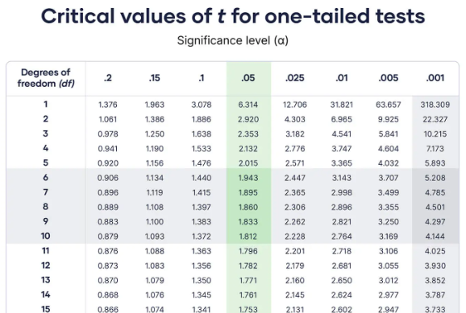

Chemometrics & Statistics
03. Similarity Analysis 1t-Test & f-Test
Initial Thoughts: Limit values
You are asked to check a contaminant concentration in a sample.
The limit value is 0.1 mg/L.
The measured concentration \(\bar{x}\) is 0.09 mg/L.
Is the sample's concentration lower than the limit?
| * *
0.1 |=================== Limit (0.1)
|
0.095 | *
|
0.09 |----*----------- Average (0.09)
| * *
0.085 | * *
|
0.08 | * *
|
|_______________________________
1 2 3 4 5 6 7 8 9 10
Sample Index
Initial Thoughts: Similarity of samples
You are asked to check the similarity of two samples.
The measured concentration of sample A is 0.09 mg/L.
The measured concentration of sample B is 0.08 mg/L.
Are the samples different?
|
0.09 |---███----------- Sample A (0.09)
| ███
0.08 |---███-------███- Sample B (0.08)
| ███ ███
|___███_______███______________
Sample A Sample B
Hypothesis testing: general idea
In statistics, when it comes to comparing values, we often use
hypothesis testing.
I.e., we asume a model with well-defined probability distributions and check if our empirical data fits in an acceptable range.
The model we choose depends on the context and the data we have.
The definition of what is acceptable is arbitrary and depends on the context. However, it is
often defined by the significance level \(\alpha = 0.05\).
The significance level \(\alpha\) describes the area of the probability distribution that is
considered as extreme and, therefore, located at the tails of the
distribution.

Hypothesis testing: h0 and h1
In hypothesis testing, we cannot prove that a hypothesis is true. Instead, we
can only reject or fail to reject it. (Falsification principle)
I.e., instead proving that the sample is lower than the limit, we can only check if the sample is equal or higher than the limit.
If we can reject the hypothesis that the sample is equal or higher than the limit, we can
conclude that the sample is lower than the limit. But we cannot
prove it.
For the hypotheses we consider the following scheme null hypothesis h0 and
alternative hypothesis h1:
h0: A == B ; h1: A != B
h0: A >= B ; h1: A < B
h0: A <= B ; h1: A > B
Where A and B are the values to be compared, the symbols == and !=
denote
equality and inequality, and the symbols <=, >=, <,
and
> denote the direction of the inequality.
So, which hypotheses h0 and h1 do we need to check if the sample
should be lower
than the limit?
one-sided one-sample t-Test
We will use the one-sided one-sample t-Test to check if the sample is lower
than the limit.
We can calculate the t-Value as follows:
\[
t = \frac{\bar{x} - \mu}{\frac{s}{\sqrt{n}}}
\]
Where \(\bar{x}\) is the sample mean, \(\mu\) is the limit value, \(s\) is the sample
standard deviation, and \(n\) is the sample size.
For this test, we need the following information:
sampleMean = {0.09, 'mg/L'}
sampleStd = {0.01, 'mg/L'}
sampleSize = 10
limitValue = {0.1, 'mg/L'}
In this test, we asume that the sample mean is equal to the limit value. So the difference should be zero. If this is true, the t-Value should follow a t-Distribution with \(n-1\) degrees of freedom.
t = (0.09 - 0.1) / (0.01 / sqrt(10))
>> t: -3.16
What does the t-Value tell us?
one-sided one-sample t-Test diagram
We can visualize the t-Value in a diagram.
t-Value: -3.16
How to get the critical t-Value(s)?
critical t-Values
To get the critical t-Value(s), we can consider the CDF of the t-Distribution.
\[\alpha = \text{CDF}(t, df) = 0.05\] Where \(\alpha\) is the significance level, \(t\) is the t-Value, \(df\) is the degrees of freedom, and CDF is the Cumulative Distribution Function of the t-Distribution.
We now need the inverse of the CDF to get the critical t-Value(s). \[\text{CDF}^{-1}(\alpha, df) = t_{\text{critical}}\]
The calculation the critical t-Value(s) is challenging. Therefore, there are lookup tables and software tools available.
ref: Scribbr
t-values to p-values
Instead checking critical t-Values, we can also calculate the p-Value of the
t-Value and compare it to the significance level.
For this, we can use the CDF of the t-Distribution and distinguish between three cases:
\[h0: A == B \rightarrow p = 2 \times \text{CDF}(-|t|, df)\] \[h0: A >= B \rightarrow p = \text{CDF}(t, df)\] \[h0: A <= B \rightarrow p=\text{CDF}(-t, df)\]
How to formulate a suitable null hypothesis?
In many cases, we have the challenge of choosing the right null hypothesis.
H0: A ≤ limit value
H0: A ≥ limit value
What's the difference between these two hypotheses?
Actually, we can use either hypothesis. However, from a risk mitigation
perspective, they serve different purposes.
For H0: A ≤ limit value, we aim to reject the hypothesis if
the sample is significantly larger than the limit, indicating that the limit has been
exceeded. This would then prompt actions to mitigate the risk.
For H0: A ≥ limit value, we fail to reject the hypothesis if
the sample is not significantly below the limit, suggesting the value may not be
sufficiently under the limit. In this case, actions are taken as a precautionary
measure.
Two-sided one-sample t-Test: Quality Threshold
Let's say we need to ensure a certain quality standard, measured by a value.
The threshold quality value is set at 5.0.
The measured average quality \(\bar{x}\) is 4.8.
Does the average quality significantly differ from the threshold?
|
5.2 | *
| *
5.0 |======== Quality Threshold (5.0)
| *
4.8 |----*------- Average (4.8)
| *
4.6 | * *
| *
|_______________________________
1 2 3 4 5 6 7 8 9 10
Sample Index
Two-sided Hypothesis: Testing around a Quality Threshold
For a two-sided test, we check whether the sample mean deviates significantly in
either direction from the threshold.
We can formulate the hypotheses as follows:
h0: A == threshold
h1: A != threshold
Here, \(H_0\) states that the quality meets the threshold exactly, while \(H_1\) suggests a significant deviation in either direction.
In this scenario, we are interested in both underperformance and
overperformance relative to the threshold.
Calculating the t-Value for a Two-sided Test
For this test, we calculate the t-Value as:
\[
t = \frac{\bar{x} - \mu}{\frac{s}{\sqrt{n}}}
\]
Where \(\bar{x}\) is the sample mean, \(\mu\) is the threshold quality value, \(s\) is the
sample standard deviation, and \(n\) is the sample size.
Suppose we have the following data:
sampleMean = {4.8, 'units'}
sampleStd = {0.2, 'units'}
sampleSize = 15
thresholdValue = {5.0, 'units'}
Calculating: \[ t = \frac{4.8 - 5.0}{\frac{0.2}{\sqrt{15}}} \approx -2.58 \]
What does this t-Value tell us about our quality threshold?
Comparing to Critical t-Values in a Two-sided Test
To determine if the quality deviates significantly, we compare the t-Value to
critical values for a two-sided test.
For a two-sided test, we consider both tails of the t-Distribution:
\[ \alpha = 2 \times (1 - \text{CDF}(|t|, df)) \]
We use lookup tables or software tools to find the critical t-Value for \(\alpha = 0.05\) and \(df = n-1\).
Since we want a two-sided comparison:
\[ t_{\text{critical}} = \pm \text{CDF}^{-1}(\alpha/2, df) \]
Two-sided Test: Calculating p-Values
Instead of comparing t-Values, we can calculate the p-Value directly for a
two-sided test.
The p-Value for a two-sided test is given by:
\[ p = 2 \times \text{CDF}(-|t|, df) \]
Here, \( p \) represents the probability of obtaining a t-Value as extreme as the observed value in either tail of the distribution.
For our example:
p = 2 * CDF(-|t| = 2.58, df = 14)
If \( p < \alpha \), we reject the null hypothesis and conclude a significant deviation from the threshold.
Two-Sample, Two-Sided t-Test: Comparing Two Groups
Suppose we want to compare the average quality scores of two different production batches.
The measured average quality score for Batch A is 4.8, while for Batch B, it is 5.1.
Is there a significant difference in quality between the two batches?
|
5.1 |---███----------- Sample B (5.1)
| ███
4.8 |---███-------███- Sample A (4.8)
| ███ ███
|___███_______███______________
Sample A Sample B
Formulating Hypotheses for Two-Sample, Two-Sided Test
For a two-sample, two-sided t-Test, we want to test if the mean of one sample differs from
the mean of another sample in either direction.
We can set up the hypotheses as follows:
h0: μA = μB
h1: μA ≠ μB
Here, \( H_0 \) assumes that the average qualities of Batch A and Batch B are equal, while \( H_1 \) suggests a significant difference in quality.
In this case, we are interested in detecting any significant difference between
the two batches, regardless of direction.
Calculating the t-Value for a Two-Sample, Two-Sided Test
For this test, we calculate the t-Value as:
\[
t = \frac{\bar{x}_A - \bar{x}_B}{\sqrt{\frac{s_A^2}{n_A} + \frac{s_B^2}{n_B}}}
\]
Where:
- \(\bar{x}_A\), \(\bar{x}_B\): Mean of samples A and B
- \(s_A\), \(s_B\): Standard deviations of samples A and B
- \(n_A\), \(n_B\): Sample sizes of A and B
Given:
sampleMeanA = {4.8, 'units'}
sampleMeanB = {5.1, 'units'}
sampleStdA = {0.3, 'units'}
sampleStdB = {0.4, 'units'}
sampleSizeA = 12
sampleSizeB = 15
Calculating: \[ t = \frac{4.8 - 5.1}{\sqrt{\frac{0.3^2}{12} + \frac{0.4^2}{15}}} \approx -1.79 \]
What does this t-Value tell us about the quality difference between the two batches?
Degrees of Freedom in a Two-Sample Test
For the two-sample t-Test, we need to calculate the degrees of freedom (df):
The formula for df when variances are equal is:
\[
df = n_A + n_B - 2
\]
Where \( n_A \) and \( n_B \) are the sample sizes of batches A and B.
df = 25
However, we can also calculate the degrees of freedom using the Welch-Satterthwaite formula, especially if the variances differ: \[ df = \frac{\left(\frac{s_A^2}{n_A} + \frac{s_B^2}{n_B}\right)^2}{\frac{\left(\frac{s_A^2}{n_A}\right)^2}{n_A - 1} + \frac{\left(\frac{s_B^2}{n_B}\right)^2}{n_B - 1}} \]
This accounts for the sample sizes and variances in both samples and ensures a more accurate critical value.
df = 24.57
Critical t-Values for a Two-Sample, Two-Sided Test
To determine if the difference in quality is significant, we compare our
t-Value to the critical values for a two-sided test:
\[
t_{\text{critical}} = \pm \text{CDF}^{-1}(\alpha/2, df)
\]
For example, with \(\alpha = 0.05\) and \(df \approx 24.57\), we look up or calculate the critical t-values for both tails.
Interpretation:
If \( |t| > t_{\text{critical}} \), we reject \( H_0 \) and conclude a significant difference between the batches.
t = -1.79
t_critical =
±CDF^-1(0.025, df = 24.57)
= ± 2.06
Calculating p-Value for a Two-Sample, Two-Sided Test
Alternatively, we can calculate the p-Value directly and compare it to the
significance level \(\alpha\).
For a two-sample, two-sided test:
\[ p = 2 \times (1 - \text{CDF}(|t|, df)) \]
This gives the probability of observing a difference as extreme as the one calculated.
For our example:
p = 2 * CDF(-|t| = 1.79, df = 24.57)
If \( p < \alpha \), we reject the null hypothesis and conclude a significant difference in quality between the two batches.
p = 0.086Introduction to the F-Test for Variance Comparison
The F-Test is used to compare the variances of two independent samples to see
if they are significantly different.
The test is commonly used before conducting a t-Test to determine if equal or unequal variance assumptions are appropriate.
Key question: Are the variances in two groups (e.g., Batch A and Batch B) significantly different?
Setting up Hypotheses for the F-Test
The F-Test compares the ratio of two sample variances to determine if there is a significant difference.
We define the hypotheses as:
h0: σA² = σB²
h1: σA² ≠ σB²
\( H_0 \): The variances of both groups are equal.
\( H_1 \): The variances of both groups are not equal.
If we reject \( H_0 \), it suggests that the variances are significantly different.
Calculating the F-Statistic
To calculate the F-Statistic, we take the ratio of the two sample variances:
\[
F = \frac{s_A^2}{s_B^2}
\]
where:
- \( s_A^2 \): Variance of Sample A
- \( s_B^2 \): Variance of Sample B
Conventionally, the larger variance is placed in the numerator to ensure \( F \geq 1 \).
Example:
sampleVarA = {0.25, 'units²'}
sampleVarB = {0.15, 'units²'}
F = 0.25 / 0.15 ≈ 1.67
The F-Statistic helps us determine if this ratio is large enough to indicate a significant difference.
Determining the Critical F-Value
To decide if the F-Statistic is significant, we compare it to a
critical F-Value from the F-distribution.
The critical F-value depends on:
The significance level \(\alpha\) (e.g., 0.05 for a 95% confidence level)
The degrees of freedom for each sample: \( df_A = n_A - 1 \) and \( df_B = n_B - 1 \)
If \( F > F_{\text{critical}} \), we reject \( H_0 \) and conclude the variances are significantly different.
For our example:
alpha = 0.05
dfA = sampleSizeA - 1 = 11
dfB = sampleSizeB - 1 = 14
F_critical ≈ 2.76
If \( F = 1.67 \) is less than \( F_{\text{critical}} = 2.76 \), we do not reject \( H_0 \).
Calculating the p-Value for a Two-Sided F-Test
For a two-sided F-Test, we calculate the p-Value considering both tails of the
F-distribution:
\[
p = 2 \times \min(\text{CDF}(F_{\text{observed}}, df_1, df_2), 1 -
\text{CDF}(F_{\text{observed}}, df_1, df_2))
\]
This calculation provides the probability of observing an F-value as extreme as or more extreme than \( F_{\text{observed}} \) in either tail, assuming \( H_0 \) (equal variances) is true.
Interpretation:
If \( p < \alpha \), we reject \( H_0 \) and conclude that the variances are significantly different.
p = 0.18Calculating the p-Value for the F-Test [ F greater 1 ]
By convention, we place the larger variance in the numerator so that \( F \geq 1 \).
This allows us to calculate the p-Value using the CDF of the F-distribution:
\[
p = 1 - \text{CDF}(F_{\text{observed}}, df_1, df_2)
\]
This represents the probability of obtaining an F-Statistic as extreme as or more extreme than the observed value, given \( H_0 \) is true.
Interpretation:
If \( p < \alpha \), we reject \( H_0 \) and conclude that the variances are significantly different.
p = 0.18Introduction to the Paired Two-Sample t-Test
The paired two-sample t-Test is used to compare the means of two related
groups.
This test is ideal for scenarios where the samples are not independent, such as measurements before and after an intervention on the same subjects.
Key question: Is there a significant difference between the two paired measurements?
Setting up Hypotheses for the Paired t-Test
In a paired t-Test, we test if the average difference between paired
observations is zero.
We define the hypotheses as:
h0: μd = 0
h1: μd ≠ 0
\( H_0 \): The mean difference (\( \mu_d \)) between paired measurements is zero (no effect).
\( H_1 \): The mean difference (\( \mu_d \)) between paired measurements is not zero (significant effect).
If we reject \( H_0 \), it suggests a significant difference between the two paired conditions.
Depending on the research question, the alternative hypothesis can be one-sided as well.
Calculating the Paired Differences
For each pair, calculate the difference between the two measurements:
\[
d_i = X_{A,i} - X_{B,i}
\]
where: \( X_{A,i} \) and \( X_{B,i} \) are the measurements from the two conditions.
Example:
Measurement_before = {8, 7, 6, 5, 9}
Measurement_after = {7, 6, 5, 5, 8}
Differences_d = {1, 1, 1, 0, 1}
Next, calculate the mean (\(\bar{d}\)) and standard deviation (\(s_d\)) of the differences.
\[ \bar{d} = \frac{\sum d_i}{n} \] \[ s_d = \sqrt{\frac{\sum (d_i - \bar{d})^2}{n-1}} \]
Calculating the t-Value for the Paired t-Test
To calculate the t-Value for a paired test, use:
\[
t = \frac{\bar{d}}{\frac{s_d}{\sqrt{n}}}
\]
where \( \bar{d} \) is the mean difference, \( s_d \) is the standard deviation of
differences, and \( n \) is the sample size.
Example with our differences:
meanDifference_d̄ = 0.8
stdDevDifference_sd = 0.4
sampleSize_n = 5
t = 0.8 / (0.4 / sqrt(5)) ≈ 2.83
This t-Value can now be compared to critical values or used to calculate a p-value.
Degrees of Freedom and Critical t-Value
For the paired t-Test, the degrees of freedom (df) is simply:
\[
df = n - 1
\]
where \( n \) is the number of pairs.
Using \( df \) and the significance level \( \alpha \), we can find the critical t-value from a t-distribution table.
Example:
sampleSize (n) = 5
df = 5 - 1 = 4
critical_t(α = 0.05, two-sided)
≈ ±2.776
Compare \( t = 2.83 \) with \( t_{\text{critical}} = ±2.776 \). Since \( |t| > t_{\text{critical}} \), we reject \( H_0 \).
Calculating the p-Value for the Paired t-Test
Alternatively, we can calculate the p-Value directly for our t-Value.
For a two-sided paired test: \[ p = 2 \times (1 - \text{CDF}(|t|, df)) \]
The p-value represents the probability of observing a difference as extreme as the calculated value, assuming \( H_0 \) is true.
Interpretation:
If \( p < \alpha \), we reject \( H_0 \) and conclude there is a significant difference between paired measurements.
What is Effect Size?
The effect size measures the magnitude of a difference, regardless of sample
size.
Unlike the p-value, which only indicates if an effect is statistically significant, the effect size shows the strength of that effect.
Example key question: How meaningful is the observed improvement in pollutant degradation?
Example: Testing a New Catalyst for Pollutant Degradation
A new catalyst is developed and tested for its efficiency in degrading pollutants in wastewater.
Two groups of samples were tested:
Control group (without catalyst)
Treatment group (with new catalyst)
Question: Is the degradation rate significantly different between the two groups? And if so, how strong is the effect?
Control (no catalyst):
[30, 32, 31, 29, 30, 33]
Treatment (new catalyst):
[45, 47, 44, 46, 48, 46]
Calculating the Effect Size: Cohen's d
For a two-sample comparison, the effect size is often measured with Cohen's d:
\[
d = \frac{\bar{X}_1 - \bar{X}_2}{s_p}
\]
where \( \bar{X}_1 \) and \( \bar{X}_2 \) are the means of the two groups, and \( s_p \) is
the pooled standard deviation.
Cohen's d quantifies the size of the difference between the groups in terms of standard deviations.
The pooled standard deviation is calculated as:
\[
s_p = \sqrt{\frac{(n_1 - 1) \times s_1^2 + (n_2 - 1) \times s_2^2}{n_1 + n_2 - 2}}
\]
where \( n_1 \) and \( n_2 \) are the sample sizes, and \( s_1 \) and \( s_2 \) are the
standard deviations.
Example Calculation:
mean_control = 30.83
mean_treatment = 46.00
std_control = 1.37
std_treatment = 1.52
pooled_std = 1.45
Cohens_d = (46.00 - 30.83) / 1.45
≈ 10.44
Interpreting Cohen's d
Cohen's d interpretation (general guidelines):
d = 0.2: Small effect
d = 0.5: Medium effect
d = 0.8 or higher: Large effect
In our example, \(d \approx 10.44\) indicates a very large effect.
Interpretation:
The new catalyst has a very large effect on pollutant degradation, meaning it significantly improves the degradation rate compared to no catalyst.
Advantages of Reporting Effect Size
Reporting effect size provides a measure of practical significance:
Contextualizes statistical significance with real-world relevance.
Helps determine if observed effects are meaningful or
trivial.
Supports meta-analyses by offering standardized effect
measurements.
Effect sizes help avoid over-reliance on p-values and clarify if the results have practical importance.
I.e., a small p-value may indicate statistical significance, but a large effect size shows a more meaningful difference.
Seminar Materials
You can download the seminar materials for this lecture here:
The data shows two sampling locations, monitored for pollutant concentrations.
Is there a significant difference between the two locations?
Is the limit value of 20 mg/L exceeded at either location?
What's the effect size of the difference in pollutant concentrations?